Платформа подбора психологов
С весны работаю с двумя основательницами. Они строят платформу подбора психологов, примерно как «Ясно».
До меня подбор шёл через Telegram-бота: он задавал вопросы и по дереву запросов приводил человека к психологу. Сайт был визиткой, и записаться через него было сложно.
95% людей заходят с телефона, часто вечером, когда им тяжело. Листать каталог из сотни анкет в таком состоянии никто не будет. Поэтому подбор мы строили как разговор.
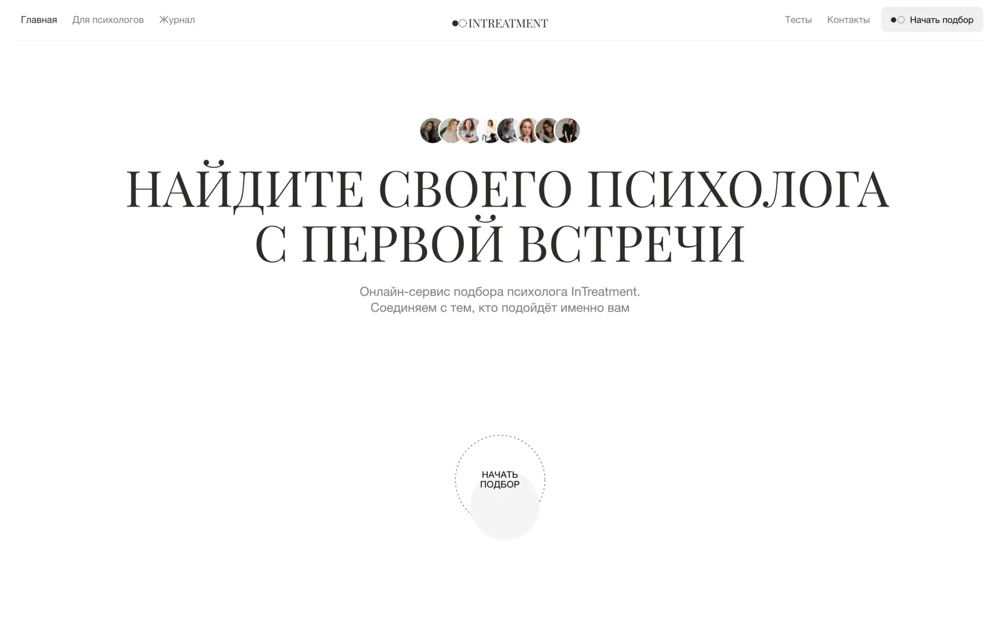
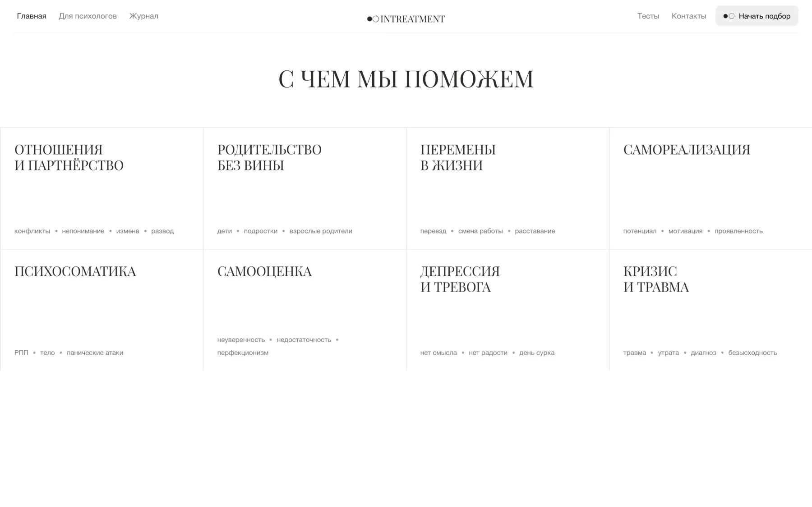
Три продукта
Я делала всё, через что проходит человек: от первого захода на сайт до кабинета после записи.
- СайтГлавная, страница для психологов, журнал, тесты, подбор и юридические страницы
- Чат-подборПо сути онбординг: человек находит психолога в разговоре
- Личный кабинетСама платформа: кабинеты клиента, психолога и администратора
Отдельная задача была со стилем. Он должен был нравиться основательницам и цеплять их будущих клиентов.
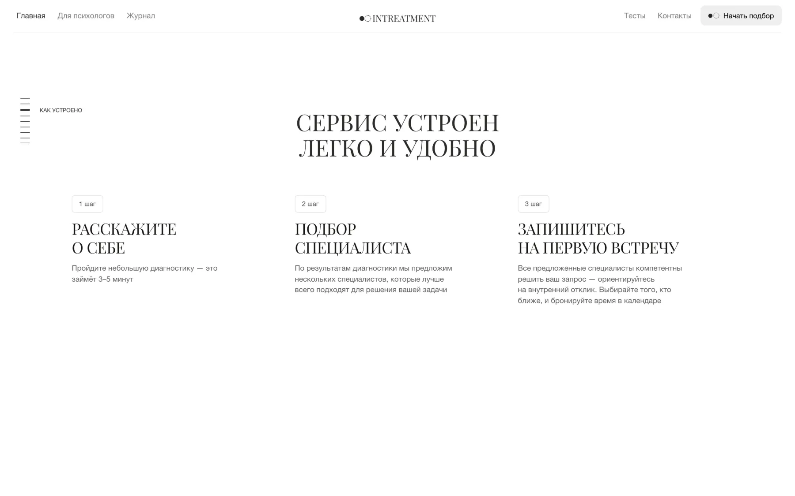
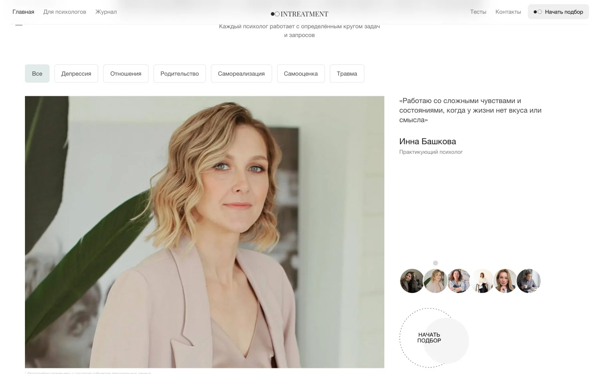
Проджект и связка Figma + Claude Code
Работала в паре с сильным проджектом. Процесс вели вместе, и в управлении я многое у неё переняла.
- FigmaДизайн экранов
- Дизайн-системаСобирала через Claude Code
- ФронтЦелостный рабочий прототип
- РазработкаПередавала готовый фронт разработчику
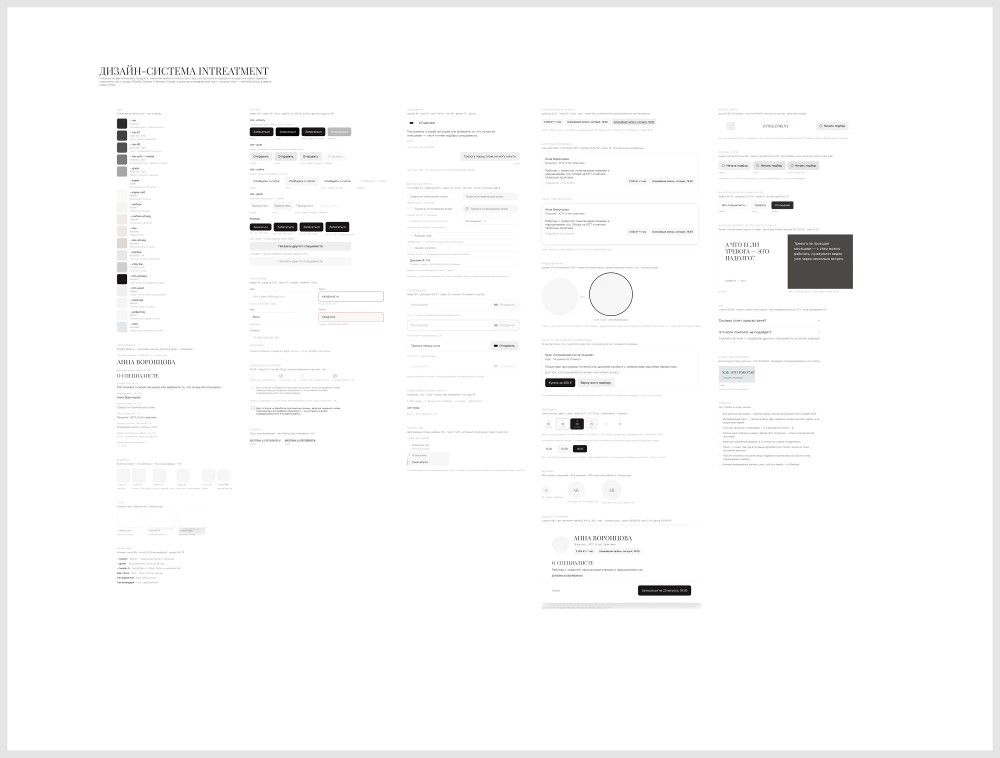
С первого раза стиль не зашёл
Сначала отталкивалась от старого брендинга. Собрала мудборды, кучу референсов, накидала новый вижн бренда. Не зашло, такое бывает.
Собрали новый бриф. Стало понятно, что основательницы хотят журнальный и лаконичный стиль. А ещё у них был свой шрифт, под который нужно было подстроиться.
Тут я немного стрессанула, но собралась и за день сделала концепт первой страницы. Его утвердили.
- Попытка 1Старый брендинг, мудборды, новый вижн. Не зашло
- Новый брифЖурнальный стиль, лаконично, их шрифт
- Попытка 2Концепт первой страницы за день. Утвердили
Самым сложным было понять, чего человек хочет, когда он сам не может это сформулировать.
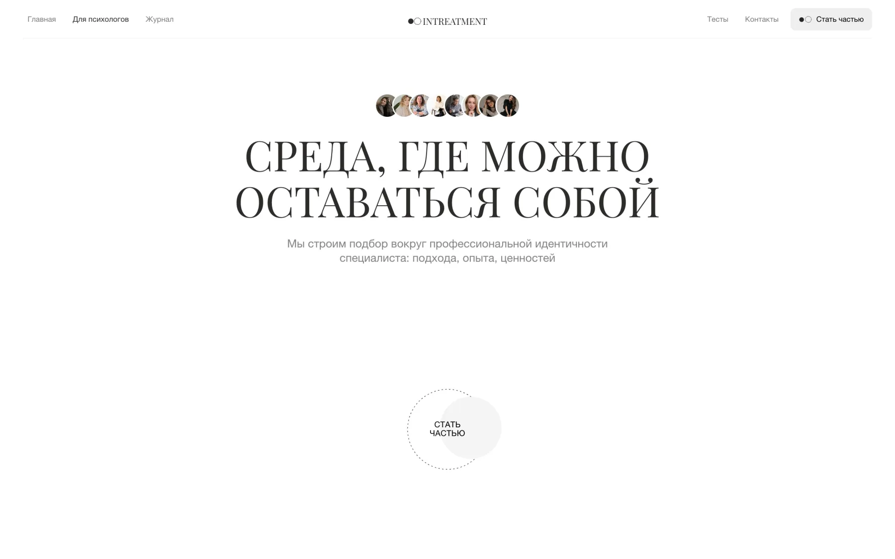
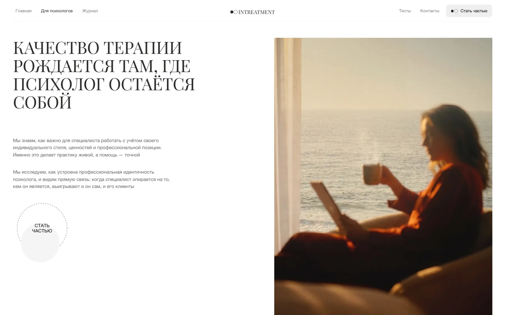
Много созвонов
Согласовывали, обсуждали, защищали решения. Разбирали каждый блок, докручивали, переделывали и снова созванивались.
- ВстречаОсновательницы проходят страницу и говорят, что не так
- ПротоколЗаписываю каждую правку по экранам
- ПравкиСразу в прототипе
- ТелефонКоманда проверяет на своих телефонах
- Новый кругНовый список правок
Дальше стало легче: следующие страницы собирались в той же стилистике.
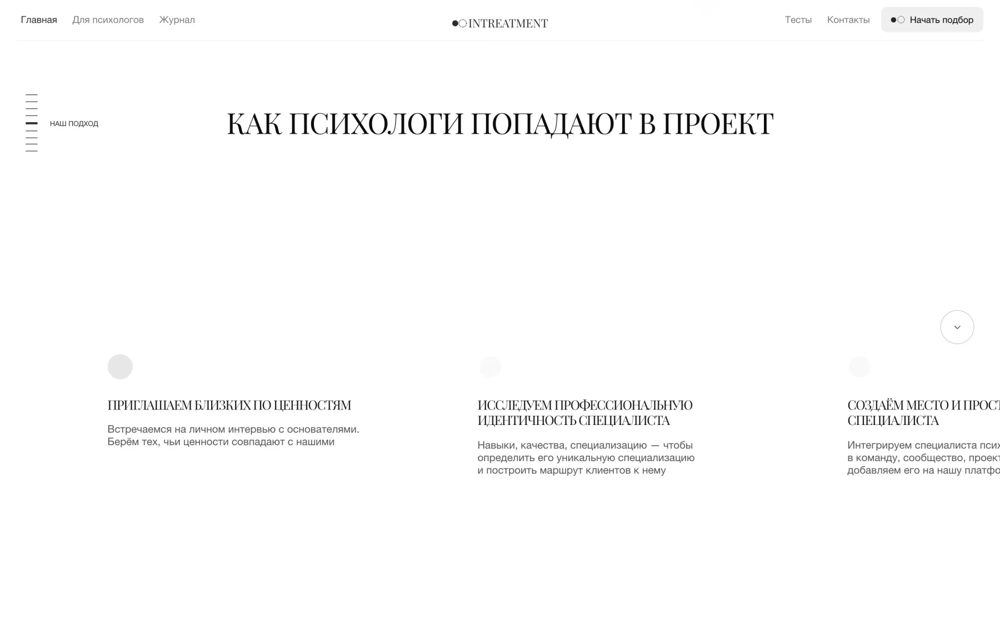
Путь клиента в Miro
Перед кабинетом разложили в Miro весь путь клиента: воронку сайта, воронку бота и схему, где отвечает ИИ, а живой дежурный проверяет. Красным отмечены места, где клиенты уходят: регистрация, оплата, покупка пакета.
По этим схемам потом сверяли всё, что рисовали в Figma и собирали в прототипе.
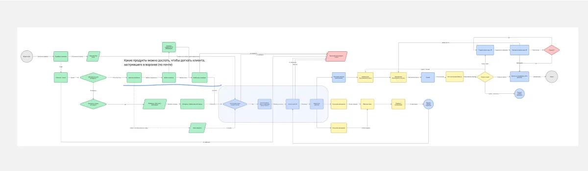
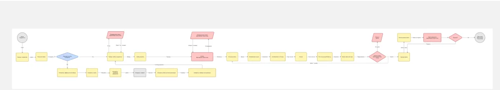
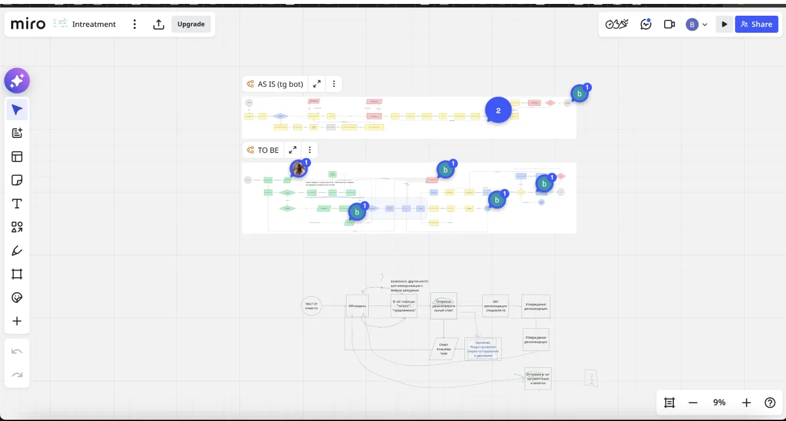
14 страниц в одной стилистике
После утверждённой главной все страницы собирались в той же системе. Главная ведёт в подбор, страница для психологов собирает заявки в команду, журнал пишут сами психологи, а тесты помогают человеку понять свой запрос и тоже приводят в подбор.
- Подбор и входГлавная с кнопкой подбора, «Давайте начнём», вход в кабинет
- Тесты8 вопросов, результат по преобладающему ответу и своя кнопка в подбор
- ЖурналСтатьи психологов, рубрики, популярное, подписка
- Для психологовЦенности, как подбираем клиентов, анкета в команду
Мобильную версию проверяли по скринам команды: карточки статей кликаются целиком, нижняя панель прячется при открытом меню, кнопки одной ширины.
Открыть прототип сайта ↗︎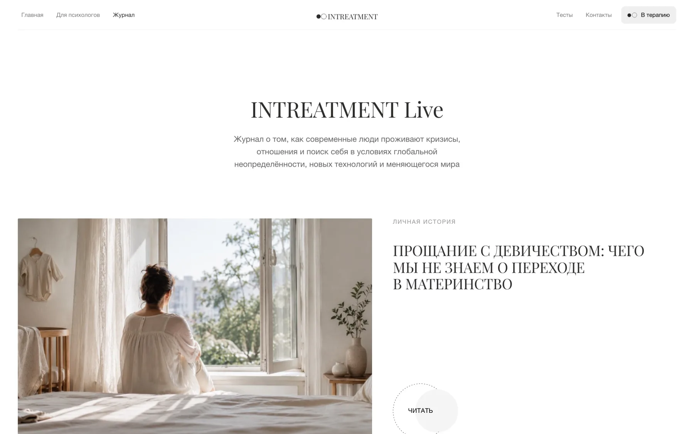
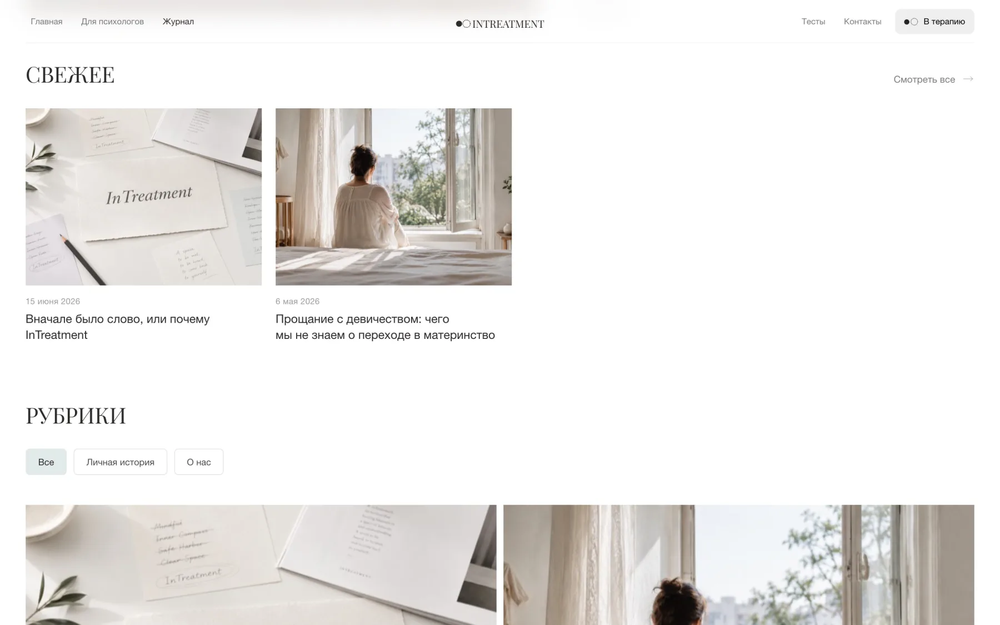
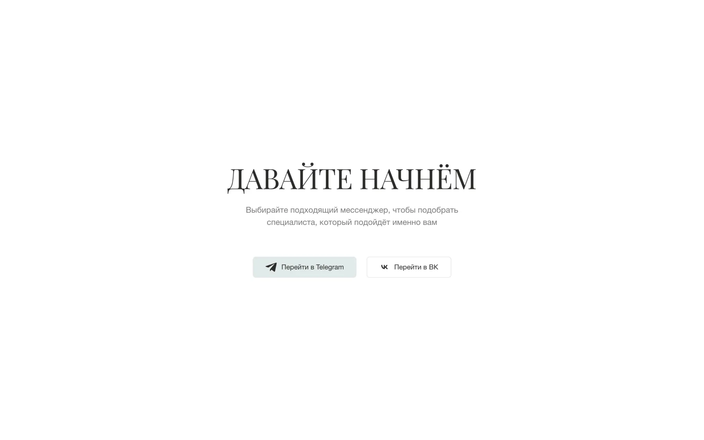
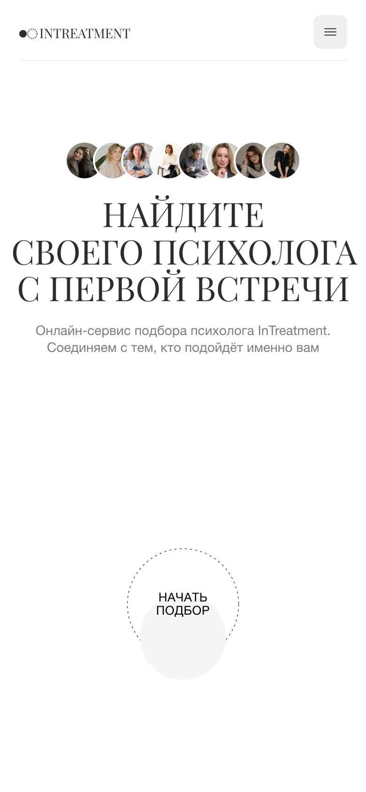
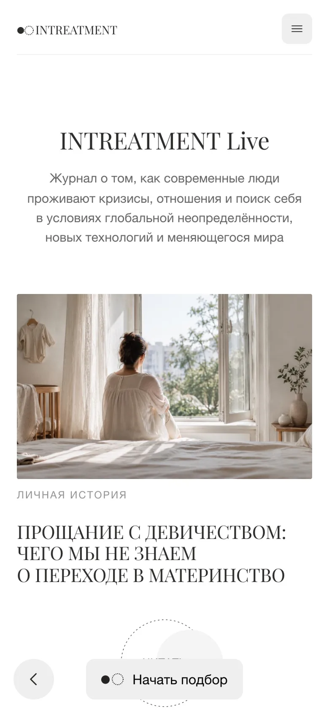
Онбординг как разговор
Алгоритм подбора я перенесла из их Telegram-бота: дерево категорий, подкатегории, описания ситуаций и специалисты с реальными ценами. А интерфейс сделала заново, как спокойную переписку.
Человек отвечает своими словами или выбирает вариант, получает карточку психолога с видео-кружком и ближайшим временем, выбирает слот, регистрируется по телефону или через Яндекс ID / VK ID и оплачивает. Для кризисных ответов есть отдельная ветка с помощью.
По просьбе команды убрала обрезку визитки психолога на телефоне. Текст визитки не повторяет карточку в профиле, поэтому режется только компоновкой, а не содержанием. Замерила на самой длинной визитке в базе: запас по высоте экрана остался.
- ШагиЧат → карточка и календарь → регистрация → оплата → готово
- ОплатаТариф, СБП или карта, промокод
- МобильнаяВизитка целиком на экране 390×844
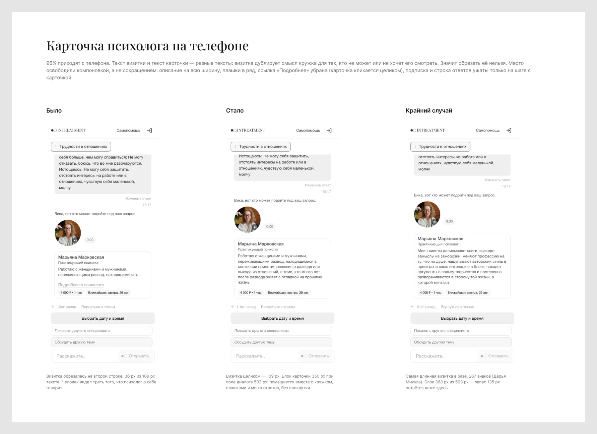
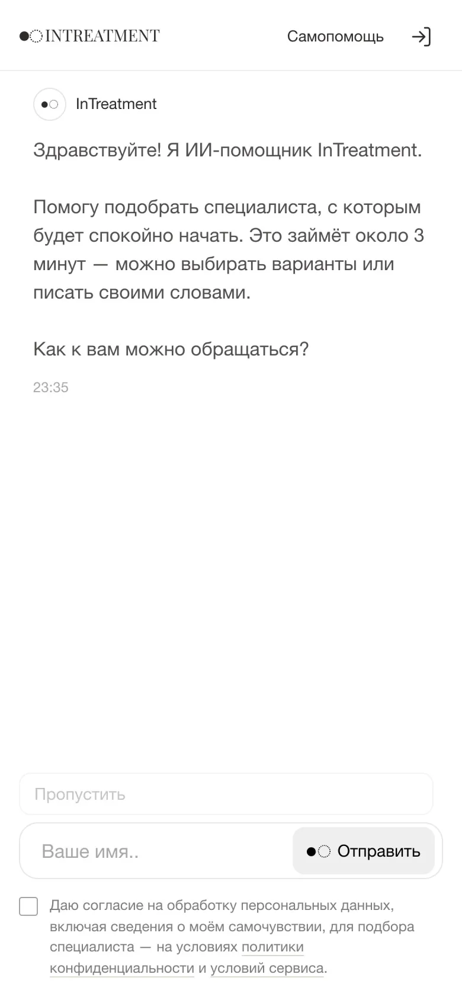
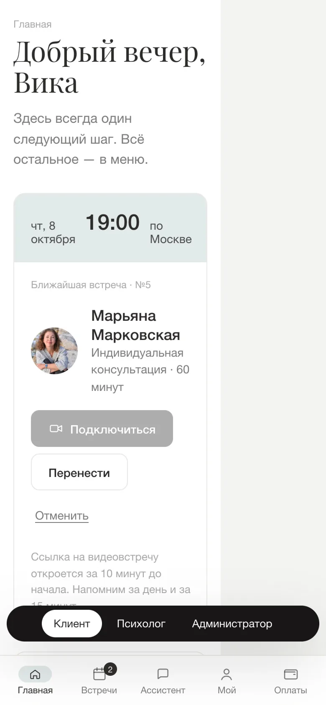
Три кабинета на одной платформе
В кабинете с человеком остаётся тот же ассистент: напоминает о встрече, помогает перенести, спрашивает, как прошло, и предлагает записаться снова.
Функции взяла из их рабочей админки, а визуал сделала в нашем журнальном стиле. Роли переключаются в одном прототипе.
- КлиентБлижайшая встреча, перенос и отмена за 24 часа, пакеты, ассистент
- ПсихологВстречи на сегодня, заявки с таймером, клиенты с заметками, расписание, доход
- АдминистраторВоронка, модерация психологов, дежурный, который проверяет ответы ИИ, инциденты, платежи
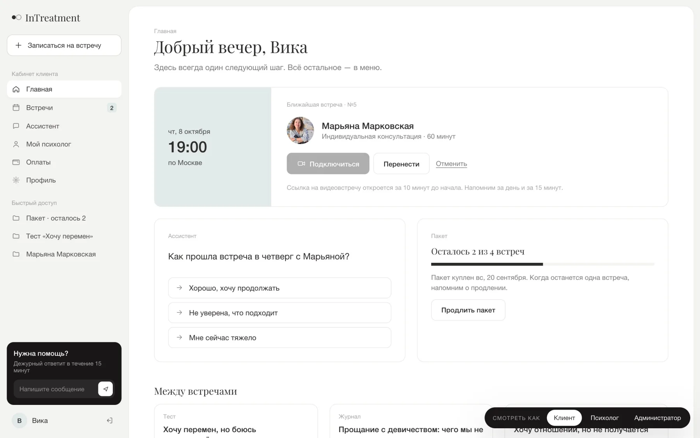
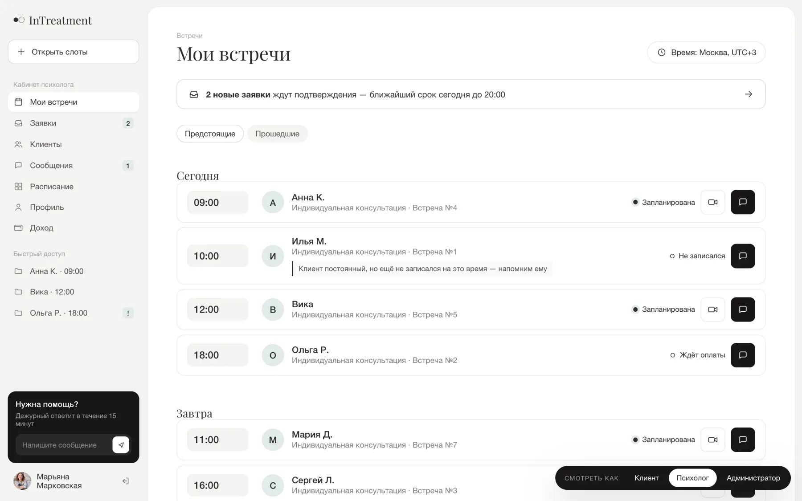
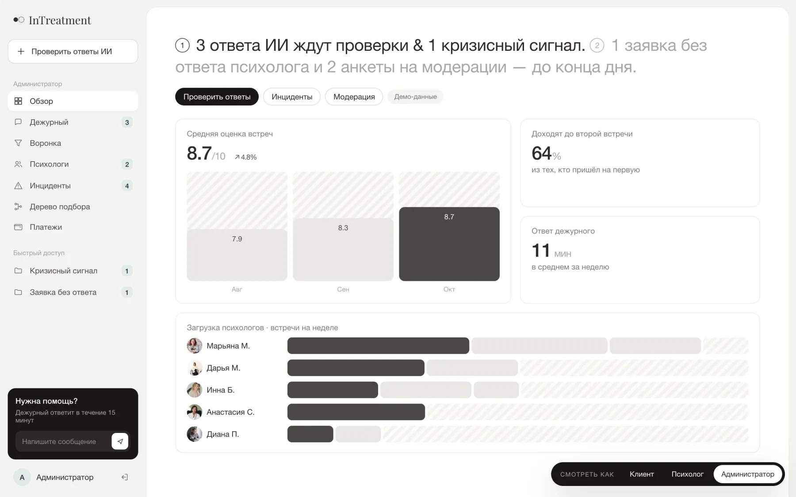
Сначала для заказчиц, потом по данным
Сайт и чат собраны как рабочие прототипы. Разработчик получил готовый фронт и подключил данные, верстать с нуля не пришлось. На этом же фронте удобно собирать варианты для A/B-тестов.
Уже пришли первые результаты аналитики. Видно, как пользователи ходят по сайту и что можно убрать и упростить.
Первый прототип уже немного переделан. Я считаю, это нормальная работа дизайнера: сначала докрутить до того, чтобы нравилось заказчицам, а потом по данным подбирать решения для пользователей.
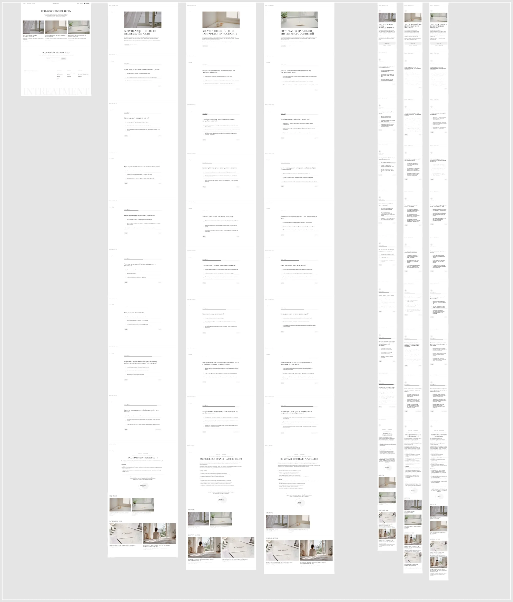